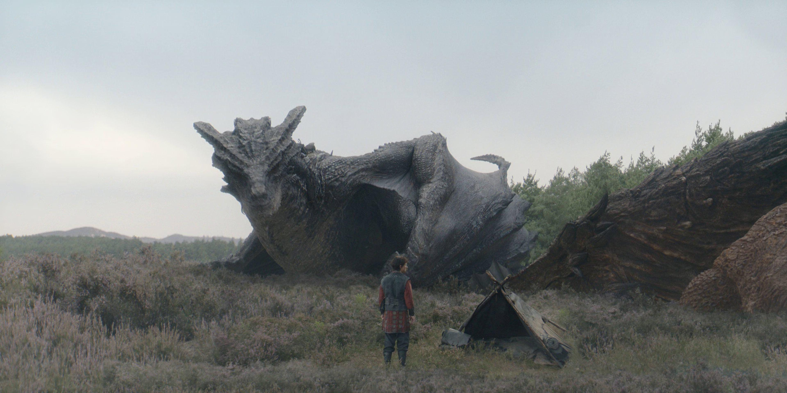

Silverwing foi uma dragão fêmea de beleza impressionante, famosa por suas escamas de um prateado reluzente e por ser considerada uma das criaturas mais dóceis de Westeros.
Ela foi chocada no berço da Boa Rainha Alysanne Targaryen e passou décadas voando ao lado de Vermithor, o dragão do Rei Jaehaerys, criando um forte vínculo com a Fúria Bronzeada.
Diferente de outros dragões selvagens, Silverwing era amigável com humanos, mas mostrou sua força devastadora anos mais tarde, durante a Dança dos Dragões, sob a montaria do traidor Ulf, o Branco.
Ela foi uma das poucas criaturas que sobreviveu aos horrores da guerra civil, refugiando-se em um estado selvagem no Lago Vermelho após a morte de seu montador.


Dragão Anterior Voltar ao Menu